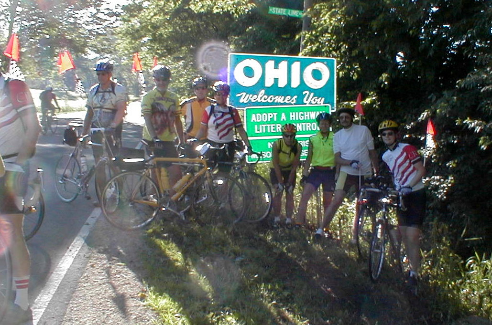

Day 36: June 17, Richmond, IN to Marysville, OHPrevious Day - Home - Next Day Photo of the DayDad and I (on the right) crossing the Ohio state line. Keegan's LogDay 36: June 17, Richmond, IN to Marysville, OH Mileage: 106.13 milesWeather: Sunny and warm, Moderate to strong wind from the north Vertical Climb: 1500 feet Riding Time: 7:00 Today was a long ride, our last century of the tour. We had wonderful weather again today, sunny, high in the upper 80s, though we had a fairly strong crosswind for much of the day. You really can't ask for much better weather, the winds haven't been too bad recently either. Just lucky I guess... We left at 7:10 this morning, the Ohio state line was only 2.5 miles from the hotel. There was still a large pack that close to the hotel, and a mess of people and cameras ensued, sand sprinkles flying in all directions. We moved on and joined a line of people, with a long day ahead we tried to save some energy. The line moved on, almost non-stop, to the first sag at 42 miles. We arrived before 10:00, a pretty easy ride. Dad and I went to the bakery across the street in Covington for some breakfast, I had a cinnamon roll with enough icing to keep me going for weeks. We decided to roll on without the help of the pace line so that we could see a little more of the scenery instead of the tire of the next person in line. The route today was pretty spartan, most of the ride was between corn and soybean fields. We passed a lot of small farms and a few tiny towns along the way. Our next stop was in St. Paris, we rode a little off course to stop at the IGA for lunch. They didn't have much in the way of sandwiches, so both dad and I assembled lunches from various parts of the store, then went outside to sit on the pallets of water-softener salt to eat. A few other riders stopped by looking for food, the IGA was the only place in town we could find. The second sag was only about 10 miles from St. Paris, we stopped for only a few minutes at the van. The last 26 miles seemed to stretch for a long time, the terrain got a little hillier as we neared Marysville. We reached the hotel just before 4:00, 5:00 with the time zone change. Everything was pushed back an hour this evening to accommodate the change, and dinner was a free night. Lynn, Ethel, dad and I went to Wendy's for a quick dinner, then back home and off to bed as soon as possible to make up for the hour we lose tonight. Tomorrow is only a 98 mile day, it also gets a little hillier yet, especially at the end of the day. Haven't heard the weather for tomorrow yet, but we're all hoping it will be like today's. Phil's LogThis will be a little short. We crossed a time zone today and the hour can only be made up by getting to bed early. Today was a lovely day. We left to a crisp morning, and by mile 3 had stopped to sprinkle our Manhattan Beach sand at the Indiana-Ohio state line. It was close to the start so the group had not had the chance to split the faster and slower riders, so it was an early Sunday morning party that left some church-goers wondering what was going on. Much of our route through Ohio was on a state bicycle course called the Cardinal Trail. It was lovely, farms and rolling countryside. The day remained crisp and clear and barely 80 degrees, The first sag was in a small town, Covington, that had done much to retain it's late 1800's character. A bakery was open, and I attacked. The building was built about 1850, and while te sticky stuff was good, the trip through te kitchen to the restroom was a trip through time! y the second sag at 77.5 miles, the day had gotten a little long. Somehow past about 80 miles the scenery seems to matter less and attention focuses on getting through the ride. My odometer read 104.9 miles as we rolled into the inn. Time to sleep. Tomorrow is 98 miles, and we've been told there is serious climbing at the end. |
{kind=link}